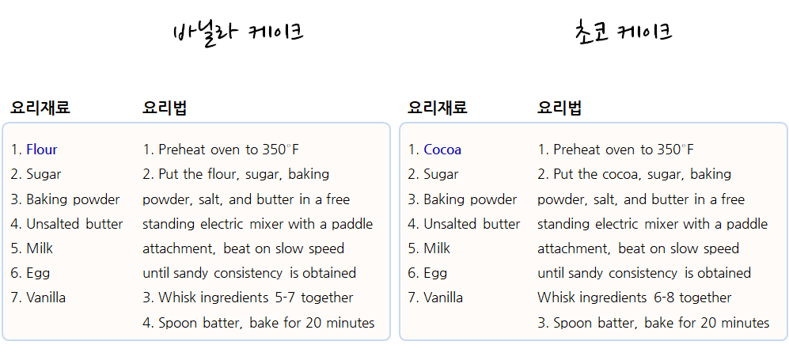
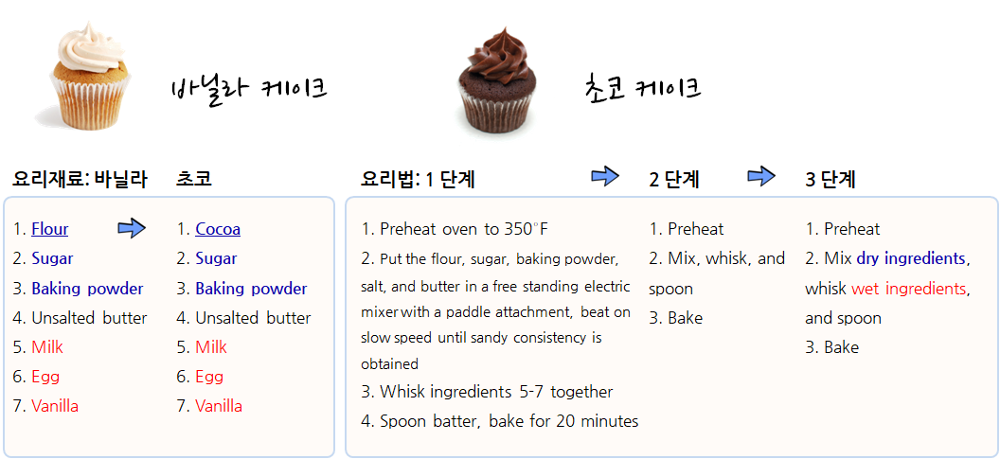
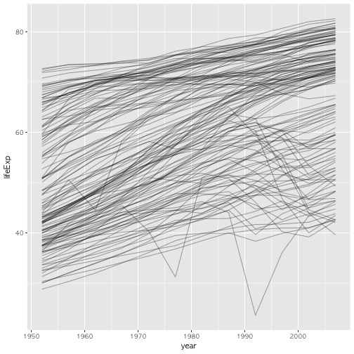
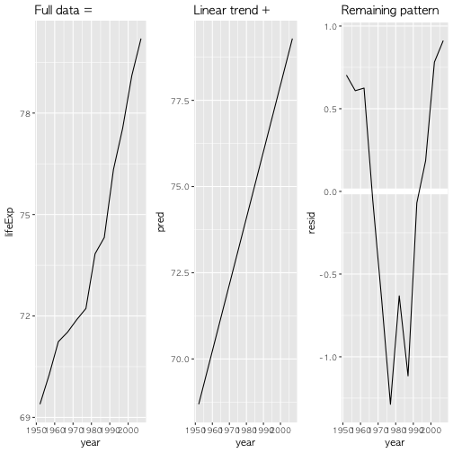
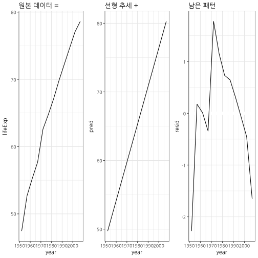
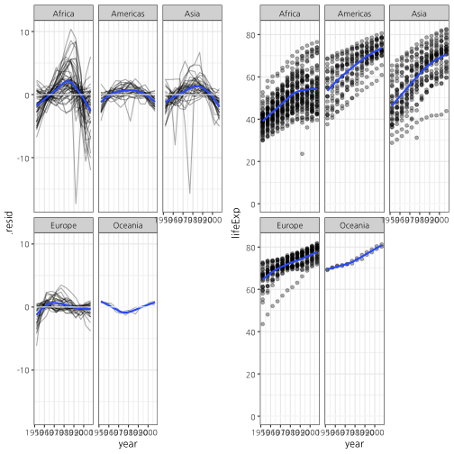
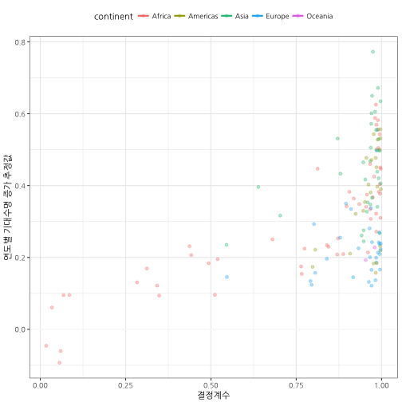

R 병렬 프로그래밍
R 함수형 프로그래밍
학습 목표
- 함수형 프로그래밍이 필요한 이유를 살펴본다.
- 함수도 인자라는 것을 이해한다.
purrr함수형 프로그래밍 기본을 이해한다.
1. for 루프 대안이 필요한 이유 1
for 루프는 객체와 구현 패턴을 강조하다보니 동작을 숨기게 된다. 반면에 함수형 프로그래밍은 명사와 마찬가지로 동사도 강조하고, 구현에 대한 상세한 내용은 추상화하여 감추어 버린다. 이런 점에서 함수형 프로그래밍으로 코드를 작성하게 되면 간결하고 유지보수성이 좋아진다. for 루프는 객체를 강조하는 반면 함수형 프로그래밍은 동작에 중점을 둔다.
R 함수형 프로그램 작성에 Hadley Wickham이 사용하는 서양식 작은 케익(cupcake) 제작 요리법을 살펴본다. 바닐라 케이크와 쵸코 케이크 요리재료와 요리법은 거의 유사하다. 차이점이 있다면 밀가루(flour)와 코코아(cocoa)가 큰 차이가 나고 나머지 요리법의 절차는 거의 유사하다.

바닐라 케이크와 쵸코 케이크 조리법이 두 페이지에 걸쳐 있는데 이를 한 페이지로 줄이면 다음과 같다. 즉, 요리재료를 표준화해서 공통 요소를 뽑아내면 밀가루(flour)와 코코아(cocoa)를 바꿔 넣으면 되고, 요리법의 경우 먼저 요리법을 체계화해서 1단계 예열, 2단계 재료 섞기, 3단계 굽기로 나누고 2단계를 좀더 상세하게 마른 재료와 젖은 재료를 섞어 혼합하는 과정으로 체계화한다.

mtcars 데이터셋 각변수에 대한 평균과 중위수를 계산하는 것을 살펴본다. for 루프를 사용하는 경우 객체와 구현 패턴에 중점을 두게 되어 mean, median 함수명만 차이나는 for 루프가 두개 생성되었다.
이를 purrr 팩키지를 사용해서 함수형 프로그램으로 작성하면 동작에 중점을 둔 훨씬 간결한 코드가 된다.
for 루프는 명사에 중점
means <- vector("double", ncol(mtcars))
for(i in seq_along(means)) {
means[[i]] <- mean(mtcars[[i]], na.rm=TRUE)
}
means [1] 20.090625 6.187500 230.721875 146.687500 3.596563 3.217250
[7] 17.848750 0.437500 0.406250 3.687500 2.812500
medians <- vector("double", ncol(mtcars))
for(i in seq_along(mtcars)) {
medians[[i]] <- median(mtcars[[i]], na.rm=TRUE)
}
medians [1] 19.200 6.000 196.300 123.000 3.695 3.325 17.710 0.000
[9] 0.000 4.000 2.000
함수형 프로그래밍은 동작에 중점
library(purrr)
map_dbl(mtcars, mean) mpg cyl disp hp drat wt
20.090625 6.187500 230.721875 146.687500 3.596563 3.217250
qsec vs am gear carb
17.848750 0.437500 0.406250 3.687500 2.812500
map_dbl(mtcars, median) mpg cyl disp hp drat wt qsec vs am
19.200 6.000 196.300 123.000 3.695 3.325 17.710 0.000 0.000
gear carb
4.000 2.000
3. 함수형 프로그래밍 라이브러리 purrr
3.1. 함수를 데이터로 간주
함수를 데이터로 간주하는 것도 가능하다. 함수(mean, median, sd)를 리스트로 만들어 놓고 이를 map 함수에 데이터로 던져서 mtcars 데이터셋 각 칼럼별로 평균, 중위수, 표준편차를 구하는 것도 가능하다.
# 3. 함수를 데이터로 간주하는 것도 가능 ------------------
funs_list <- list(mean, median, sd)
map(funs_list, ~ mtcars %>% map_dbl(.x))[[1]]
mpg cyl disp hp drat wt
20.090625 6.187500 230.721875 146.687500 3.596563 3.217250
qsec vs am gear carb
17.848750 0.437500 0.406250 3.687500 2.812500
[[2]]
mpg cyl disp hp drat wt qsec vs am
19.200 6.000 196.300 123.000 3.695 3.325 17.710 0.000 0.000
gear carb
4.000 2.000
[[3]]
mpg cyl disp hp drat wt
6.0269481 1.7859216 123.9386938 68.5628685 0.5346787 0.9784574
qsec vs am gear carb
1.7869432 0.5040161 0.4989909 0.7378041 1.6152000
3.2. purrr 기초
함수를 인자로 넘기는 방법이 하나만 있는 것은 아니다. sapply, lapply 함수를 사용하는 방법이 많이 사용되고 있으며, 위에서 처럼 직접 함수를 작성해도 되지만, purrr 팩키지를 사용하여 기능을 동일한 기능 구현을 통일하는 것도 가능하다.
sapply(df, mean) a b c d
3.0 30.0 5.0 4.4
library(purrr)
map_dbl(df, mean) a b c d
3.0 30.0 5.0 4.4
map 함수는 반환되는 자료형에 따라 차이가 나지만 기본적인 작동방식은 동일하다.
map(): 리스트를 반환map_dbl(): double 숫자벡터를 반환map_lgl(): 부울 논리 벡터를 반환map_int(): 정수형 벡터를 반환map_chr(): 문자형 벡터를 반환
3.3. purrr map 함수 .f 지정방법
.f 함수를 지정하는 다양한 방법을 살펴보면 다음과 같다.
- 기존 함수를 사용 :
map(df, summary) - 사용자 정의 함수를 사용 :
map(df, rescale) - 익명 함수를 사용 :
map(df, function(x) sum(is.na(x))) - 공식 단축키 함수를 사용 :
map(df, ~ sum(is.na(x)))
.f 함수를 [[으로 원소 혹은 하위집합을 뽑아내는 경우를 살펴보자.
list_of_results <- list(
list(a = 1, b = "A"),
list(a = 2, b = "C"),
list(a = 3, b = "D"))
map_dbl(list_of_results, function(x) x[["a"]])[1] 1 2 3
map_dbl(list_of_results, "a")[1] 1 2 3
map_dbl(list_of_results, 1)[1] 1 2 3
map_dbl(list_of_results, function(x) x[["a"]]) 첫번째 경우 익명함수를 사용해서 리스트명을 기준으로 뽑아낸다. 두번째 map_dbl(list_of_results, "a")는 문자열 명칭을 사용해서 하위집합 뽑아내기를 통해 단축키를 사용해서 뽑아낸다. 마지막, map_dbl(list_of_results, 1)은 정수 숫자위치를 기준으로 하위집합 뽑아내는 단축키 활용법을 보여주고 있다.
함수형 프로그래밍은 패턴을 일반화하여 추상화해서, 개발자가 데이터와 동작에 집중하게도록 한다. 이를 통해 반복문제를 좀더 쉽게 풀 수 있도록 하고, 더 이해하기 좋은 코드를 만들게 돕는다.
4. 함수형 프로그래밍을 통한 데이터 분석 2
지금까지 학습한 함수형 프로그래밍을 gapminder 데이터 분석에 적극 활용해 보자. 우선, 전세계적으로 국가별로 기대수명(lifeExp)이 연도별로 어떻게 변화해가는지 시각화해보자. 하지만, 문제는 국가가 너무 많다는 점이다. 142 국가가 있어 국가별로 회귀모형같은 단순한 모형을 돌려서 관계를 도출하기가 쉽지 않다.
# 0. 환경설정 ------------------
library(tidyverse)
library(purrr)
library(gapminder)
library(broom)
library(modelr)
library(gridExtra)
library(stringr)
library(ggthemes)
library(extrafont)
loadfonts()
# 1. 문제모형 시각화 들어가며 -------------
gapminder %>%
ggplot(aes(year, lifeExp, group = country)) +
geom_line(alpha = 1/3)
4.1. 가내수공업 방식
한땀 한땀 수작업으로 정성스럽게 데이터를 분석하는 방식과 함수를 활용하여 수작업을 좀더 개선하는 형태로 데이터를 분석하는 방식으로 살펴본다.
특정국가를 잡아 시각화
# 2. 특정국가 모형 적합 -------------
nz <- gapminder %>%
filter(country == "New Zealand")
orig_g <- nz %>%
ggplot(aes(year, lifeExp)) +
geom_line() +
ggtitle("Full data = ")
nz_mod <- lm(lifeExp ~ year, data = nz)
model_g <- nz %>%
add_predictions(nz_mod) %>%
ggplot(aes(year, pred)) +
geom_line() +
ggtitle("Linear trend + ")
resid_g <- nz %>%
add_residuals(nz_mod) %>%
ggplot(aes(year, resid)) +
geom_hline(yintercept = 0, colour = "white", size = 3) +
geom_line() +
ggtitle("Remaining pattern")
grid.arrange(orig_g, model_g, resid_g, ncol=3)
함수로 시각화
# 4. 함수로 작성 -------------
draw_model <- function(country_name) {
df <- gapminder %>%
filter(country == country_name)
orig_g <- df %>%
ggplot(aes(year, lifeExp)) +
geom_line() +
theme_bw(base_family = "NanumGothic") +
ggtitle("원본 데이터 = ")
lm_mod <- lm(lifeExp ~ year, data = df)
model_g <- df %>%
add_predictions(lm_mod) %>%
ggplot(aes(year, pred)) +
geom_line() +
theme_bw(base_family = "NanumGothic") +
ggtitle("선형 추세 + ")
resid_g <- df %>%
add_residuals(lm_mod) %>%
ggplot(aes(year, resid)) +
geom_hline(yintercept = 0, colour = "white", size = 3) +
geom_line() +
theme_bw(base_family = "NanumGothic") +
ggtitle("남은 패턴")
grid.arrange(orig_g, model_g, resid_g, ncol=3)
}
# draw_model("New Zealand")
draw_model("Korea, Rep.")
4.2. 현대화된 다수 모형 분석방법
현대화된 다수 모형 분석방법은 3가지 팩키지가 구심적 같은 역할을 수행한다.
- 자료구조는 중첩 데이터프레임(nested dataframe)
- 핵심 프로그래밍은 함수형 프로그래밍(functional programming)
- 모형은
broom
142개 국가에 대해서 국가별로 기대수명(lifeExp)에 대한 회귀분석을 돌리는 것은 사람이 할 짓이 아니다. 이를 좀더 체계적으로 수행하기 위해서 nest()함수를 활용하여 중첩 데이터프레임(nested dataframe)을 도입하여 데이터를 group_by로 정리하고 나서 회귀모형 함수를 group_by 즉, 국가별로 함수형 프로그래밍을 적용하여 수행한다.
- 데이터프레임의
group_by로 생성된 키(key) group_by로 구분되는 그룹데이터- 함수형 프로그래밍으로 적합시킨 회귀모형
- 각 그룹별로 적합시킨 회귀모형 성능 및 복잡성, 모형을 상세하게 살펴볼 수 있는 세부 데이터
# 2. gapminder 다수 모형 ------------------
## 2.1. 모형 데이터(중첩 데이터프레임, nested dataframe) 준비 ------------------
by_country <- gapminder %>%
group_by(continent, country) %>%
nest()
by_country$data[[1]]# A tibble: 12 x 4
year lifeExp pop gdpPercap
<int> <dbl> <int> <dbl>
1 1952 28.801 8425333 779.4453
2 1957 30.332 9240934 820.8530
3 1962 31.997 10267083 853.1007
4 1967 34.020 11537966 836.1971
5 1972 36.088 13079460 739.9811
6 1977 38.438 14880372 786.1134
7 1982 39.854 12881816 978.0114
8 1987 40.822 13867957 852.3959
9 1992 41.674 16317921 649.3414
10 1997 41.763 22227415 635.3414
11 2002 42.129 25268405 726.7341
12 2007 43.828 31889923 974.5803
## 2.2. 선형회귀 모형 준비 -----------------
country_model <- function(df) {
lm(lifeExp ~ year, data=df)
}
## 2.3. 국가별 선형회귀 모형 접합 -----------------
# models <- map(by_country$data, country_model)
by_country <- by_country %>%
mutate(model = map(data, country_model))
names(by_country$model) <- by_country$country
by_country$model["Korea, Rep."]$`Korea, Rep.`
Call:
lm(formula = lifeExp ~ year, data = df)
Coefficients:
(Intercept) year
-1034.4133 0.5554
4.3. 현대화된 다수 모형 결과 수집
리스트 칼럼 형태로 중첩 데이터프레임이 준비되면 데이터 뿐만 아니라 앞서 적합시킨 모형, 그리고 모형 결과를 하나의 데이터프레임에 담을 수 있게 된다. 이렇게 되면 데이터, 모형, 모형결과를 group_by 집단별로 비교하는 것이 용이하다.
## 2.4. 국가별 선형모형 결과 -----------------
by_country <- by_country %>%
mutate(
tidy = map(model, broom::tidy),
glance = map(model, broom::glance),
rsq = glance %>% map_dbl("r.squared"),
augment = map(model, broom::augment)
)
by_country$tidy["Korea, Rep."]$`Korea, Rep.`
term estimate std.error statistic p.value
1 (Intercept) -1034.4133 38.87692064 -26.60739 1.297646e-10
2 year 0.5554 0.01963902 28.28043 7.104026e-11
by_country$glance["Korea, Rep."]$`Korea, Rep.`
r.squared adj.r.squared sigma statistic p.value df logLik
1 0.987651 0.9864161 1.174243 799.7828 7.104026e-11 2 -17.86081
AIC BIC deviance df.residual
1 41.72163 43.17635 13.78846 10
4.4. 데이터 원복
nest()로 만든 중첩 데이터프레임을 unnest() 함수로 중첩 데이터프레임을 풀어서 원복시킨다.
## 2.5. unnest 원복 -----------------
unnest(by_country, data) # A tibble: 1,704 x 7
continent country rsq year lifeExp pop gdpPercap
<fctr> <fctr> <dbl> <int> <dbl> <int> <dbl>
1 Asia Afghanistan 0.9477123 1952 28.801 8425333 779.4453
2 Asia Afghanistan 0.9477123 1957 30.332 9240934 820.8530
3 Asia Afghanistan 0.9477123 1962 31.997 10267083 853.1007
4 Asia Afghanistan 0.9477123 1967 34.020 11537966 836.1971
5 Asia Afghanistan 0.9477123 1972 36.088 13079460 739.9811
6 Asia Afghanistan 0.9477123 1977 38.438 14880372 786.1134
7 Asia Afghanistan 0.9477123 1982 39.854 12881816 978.0114
8 Asia Afghanistan 0.9477123 1987 40.822 13867957 852.3959
9 Asia Afghanistan 0.9477123 1992 41.674 16317921 649.3414
10 Asia Afghanistan 0.9477123 1997 41.763 22227415 635.3414
# ... with 1,694 more rows
unnest(by_country, tidy)# A tibble: 284 x 8
continent country rsq term estimate std.error
<fctr> <fctr> <dbl> <chr> <dbl> <dbl>
1 Asia Afghanistan 0.9477123 (Intercept) -507.5342716 40.484161954
2 Asia Afghanistan 0.9477123 year 0.2753287 0.020450934
3 Europe Albania 0.9105778 (Intercept) -594.0725110 65.655359062
4 Europe Albania 0.9105778 year 0.3346832 0.033166387
5 Africa Algeria 0.9851172 (Intercept) -1067.8590396 43.802200843
6 Africa Algeria 0.9851172 year 0.5692797 0.022127070
7 Africa Angola 0.8878146 (Intercept) -376.5047531 46.583370599
8 Africa Angola 0.8878146 year 0.2093399 0.023532003
9 Americas Argentina 0.9955681 (Intercept) -389.6063445 9.677729641
10 Americas Argentina 0.9955681 year 0.2317084 0.004888791
# ... with 274 more rows, and 2 more variables: statistic <dbl>,
# p.value <dbl>
unnest(by_country, glance, .drop = TRUE) # A tibble: 142 x 14
continent country rsq r.squared adj.r.squared sigma
<fctr> <fctr> <dbl> <dbl> <dbl> <dbl>
1 Asia Afghanistan 0.9477123 0.9477123 0.9424835 1.2227880
2 Europe Albania 0.9105778 0.9105778 0.9016355 1.9830615
3 Africa Algeria 0.9851172 0.9851172 0.9836289 1.3230064
4 Africa Angola 0.8878146 0.8878146 0.8765961 1.4070091
5 Americas Argentina 0.9955681 0.9955681 0.9951249 0.2923072
6 Oceania Australia 0.9796477 0.9796477 0.9776125 0.6206086
7 Europe Austria 0.9921340 0.9921340 0.9913474 0.4074094
8 Asia Bahrain 0.9667398 0.9667398 0.9634138 1.6395865
9 Asia Bangladesh 0.9893609 0.9893609 0.9882970 0.9766908
10 Europe Belgium 0.9945406 0.9945406 0.9939946 0.2929025
# ... with 132 more rows, and 8 more variables: statistic <dbl>,
# p.value <dbl>, df <int>, logLik <dbl>, AIC <dbl>, BIC <dbl>,
# deviance <dbl>, df.residual <int>
4.5. 데이터 원복 시각화
원복시킨 데이터를 바탕으로 시각화를 통해 대륙(continent)별로 비교한다.
## 2.6. 모형 시각화 -----------------
resid_g <- by_country %>%
unnest(augment) %>%
ggplot(aes(year, .resid)) +
geom_line(aes(group=country), alpha = 1/3) +
geom_smooth(se=FALSE) +
geom_hline(yintercept = 0, color = "white") +
facet_wrap(~continent) +
theme_bw(base_family="NanumGothic")
lifeExp_g <- by_country %>%
# filter(country == "Korea, Rep.") %>%
unnest(augment) %>%
ggplot(aes(year, lifeExp)) +
geom_point(alpha = 1/3) +
geom_smooth(se=FALSE) +
geom_hline(yintercept = 0, color = "white") +
facet_wrap(~continent) +
theme_bw(base_family="NanumGothic")
grid.arrange(resid_g, lifeExp_g, ncol=2)
4.6. 다수 모형을 통한 데이터 분석 - \(R^2\)와 회귀계수
결정계수와 회귀계수를 뽑아내서 예측한 것과 비교하여 차이나는 부분을 쉽게 탐지해낼 수 있다.
## 2.7. R^2 vs. Estimates -----------------
by_country %>%
unnest(tidy) %>%
filter(term == "year") %>%
ggplot(aes(rsq, estimate,color=continent)) +
geom_point(aes(group=continent), alpha = 1/3) +
geom_smooth(se=FALSE) +
geom_hline(yintercept = 0, color = "white") +
theme_bw(base_family="NanumGothic") +
theme(legend.position = "top") +
labs(x="결정계수", y="연도별 기대수명 증가 추정값")